Batch 04
YOLOv11n · v1 dataset
- Backbone
- yolo11n.pt
- Params
- 2.6 M
- Dataset
- v1 (original)
- Train images
- 560
- Epochs
- 100 / 100
- Best epoch
- 60
Establishes the project baseline. Perfectly balanced 800-image v1 dataset; no early stop.
Three single-variable training runs of the campus infrastructure detector, decomposing the contribution of each change. 04 is the YOLOv11n baseline. 05 swaps in the updated custom dataset (dataset uplift). 06 upgrades the backbone to YOLOv11s while holding that dataset fixed (model uplift).
This report contrasts three consecutive training runs of the campus
infrastructure detector (projector, whiteboard,
fire_extinguisher, door_sign) and isolates the
contribution of each change. Batch 04 is the
baseline: YOLOv11n on the original aggregated dataset.
Batch 05 holds the model fixed and swaps in an
improved custom dataset with rebalanced sourcing, denser annotation, and
more in-house captures — the dataset uplift.
Batch 06 holds that improved dataset fixed and
swaps the backbone from YOLOv11n (2.6M params) to YOLOv11s (9.4M params) —
the model uplift.
The headline finding is that the dataset change moved the needle far
more than the model upgrade. Going from Batch 04 → 05, test mAP@0.5
jumps +5.4 pp and macro recall jumps
+11.9 pp at unchanged precision (1.000). Going from
Batch 05 → 06, test mAP@0.5 actually dips slightly
(−0.8 pp) but the stricter mAP@0.5:0.95 climbs
+0.8 pp and the whiteboard class
tightens dramatically (mAP@0.5:0.95 +3.1 pp).
Batch 06 also pays a small precision cost on door_sign
(1.0000 → 0.9697) — the first non-perfect precision in the project's
history.
The Project 1 model (Batch 04) shipped with strong precision but uneven recall and localisation:
| Class | P (test) | R (test) | mAP@0.5 | mAP@0.5:0.95 |
|---|---|---|---|---|
| projector | 1.00 | 0.8036 | 0.8964 | 0.7290 |
| whiteboard | 1.00 | 0.7625 | 0.8761 | 0.7767 |
| fire_extinguisher | 1.00 | 0.9565 | 0.9780 | 0.9045 |
| door_sign | 1.00 | 0.9224 | 0.9822 | 0.7733 |
| macro | 1.0000 | 0.8613 | 0.9332 | 0.7959 |
Four failure patterns drove the Project 2 plan:
projector and whiteboard recall ~20 pp below the other two classes. Sourced from a narrow style distribution in v1; the model had never seen enough HUB-campus framings. Counter-strategy: Cat. B #5 (targeted dataset expansion), #8 (class balance), C #10 (multi-scale capture distances).fire_extinguisher over-represented in v1 (848 source pairs vs. 200–319 for others). Counter-strategy: Cat. B #5/#7/#8 — rebuild the corpus with balanced sourcing and re-checked labels.whiteboard and door_sign retained sub-pixel localisation drift on the strict mAP@0.5:0.95 metric. Counter-strategy: Cat. A #1 — upgrade the backbone to YOLOv11s (9.4 M params) for finer-grained box regression.Batches 05 and 06 implement the diagnoses as two single-variable steps, so the test-metric deltas are causally attributable to (a) the dataset interventions and (b) the backbone upgrade respectively.
Each batch changes exactly one variable from the previous one. Every other hyper-parameter (lr, batch, schedule, augmentation, seed) is held fixed.
YOLOv11n · v1 dataset
Establishes the project baseline. Perfectly balanced 800-image v1 dataset; no early stop.
YOLOv11n · v2 dataset
Same recipe, new data. Rebalanced sources, denser annotation (+15.4 % more boxes), more in-house captures.
YOLOv11s · v2 dataset
Same dataset, bigger model. 3.6× parameters and 3.3× GFLOPs over Batches 04 and 05.
All three runs flow through the same notebook pipeline
(nb01_data_collection → nb05_model_evaluation)
on the same hardware (CUDA · RTX 4060) and with identical hyperparameters,
apart from the two variables under study.
| Hyper-parameter | Value |
|---|---|
| Image size | 640 × 640 |
| Batch | 16 |
| Optimiser | SGD · lr0=0.01 · lrf=0.01 · momentum 0.937 · wd 5e-4 |
| Epochs | 100 (early stop, patience = 15) |
| Augmentation | mosaic 1.0 (closed last 10 ep), HSV-S 0.7, HSV-V 0.4, fliplr 0.5, randaugment, erasing 0.4 |
| Loss weights | box 7.5 · cls 0.5 · dfl 1.5 |
| Seed | 42 (deterministic) |
| AMP | enabled (FP16) |
| Variable | Batch 04 | Batch 05 | Batch 06 |
|---|---|---|---|
| Backbone | yolo11n.pt · 2.6 M · 6.5 GFLOPs | yolo11n.pt · 2.6 M · 6.5 GFLOPs | yolo11s.pt · 9.4 M · 21.6 GFLOPs |
| Dataset version | v1 (original aggregated) | v2 (updated custom) | v2 (same as Batch 05) |
Two single-variable steps. Batch 04 → 05 isolates dataset quality. Batch 05 → 06 isolates model capacity.
Batch 04 is the Project 1 baseline; Batches 05 and 06 stack improvements on top.
| Cat. | # | Strategy | How it is realised | First seen in |
|---|---|---|---|---|
| A | 1 | Upgrade / switch backbone | YOLOv11n (2.6 M params) → YOLOv11s (9.4 M params, 21.6 GFLOPs) | Batch 06 |
| A | 2 | Fine-tune from a pretrained checkpoint (not random init) | All runs start from yolo11n.pt / yolo11s.pt COCO-pretrained weights | All |
| A | 4 | Early stopping + regularisation | patience=15, weight decay 5e-4 — Batch 05 early-stopped at epoch 87 | All |
| B | 5 | Expand dataset with images targeting underperforming classes | v2 rebuilt with new HUB-campus captures aimed at the two worst Batch 04 classes (whiteboard, projector) | 05/06 |
| B | 7 | Re-annotate / correct labels | v2 rebuild pruned empty-label scenes and re-checked boxes — empty labels fall in every split | 05/06 |
| B | 8 | Improve class balance | v2 source pools sit between 238–249 across all four classes (vs. 200–848 in v1) | 05/06 |
| C | 10 | Multi-scale coverage for objects at different sizes | New HUB captures shot at varied subject distances, broadening the box-area distribution | 05/06 |
| C | 11 | Post-processing improvement (confidence-threshold calibration) | Confidence-threshold slider exposed in the live inference UI | downstream UI |
The trio exercises strategies across all three categories — A (1, 2, 4), B (5, 7, 8), C (10, 11) — well beyond the brief's "≥ 2 strategies, at least one from Category A" requirement.
| Component | Version |
|---|---|
| OS | Windows 11 Home (10.0.26200) |
| GPU | NVIDIA GeForce RTX 4060 |
| CUDA | 12.6 |
| cuDNN | 9.10.2 |
| Python | 3.13.12 |
| PyTorch | 2.11.0+cu126 |
| Ultralytics | 8.3.253 |
| Seed | 42 (deterministic) |
Batches 05 and 06 share the same dataset, so the dataset-level deltas are between Batch 04 (v1) and Batches 05/06 (v2).
| Class | v1 available pairs | v2 available pairs | Δ |
|---|---|---|---|
| projector | 319 | 249 | −70 |
| whiteboard | 200 | 238 | +38 |
| fire_extinguisher | 848 | 248 | −600 |
| door_sign | 240 | 244 | +4 |
| Split | v1 (proj / wb / fe / ds) | v2 (proj / wb / fe / ds) |
|---|---|---|
| train | 140 / 140 / 140 / 140 | 123 / 140 / 140 / 140 |
| val | 40 / 40 / 40 / 40 | 36 / 40 / 40 / 40 |
| test | 20 / 20 / 20 / 20 | 18 / 20 / 20 / 20 |


The v2 dataset is meaningfully denser in bounding boxes at constant image count. Empty-label images drop across every split — the curator pruned scenes with no visible target and added multi-instance scenes.
| Metric | v1 (Batch 04) | v2 (Batches 05 + 06) | Δ |
|---|---|---|---|
| train boxes | 695 | 810 | +115 |
| train empty labels | 25 | 17 | −8 |
| val boxes | 200 | 229 | +29 |
| val empty labels | 7 | 4 | −3 |
| test boxes | 102 | 112 | +10 |
| test empty labels | 3 | 2 | −1 |
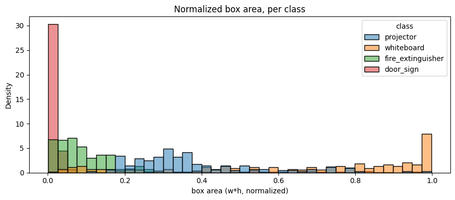


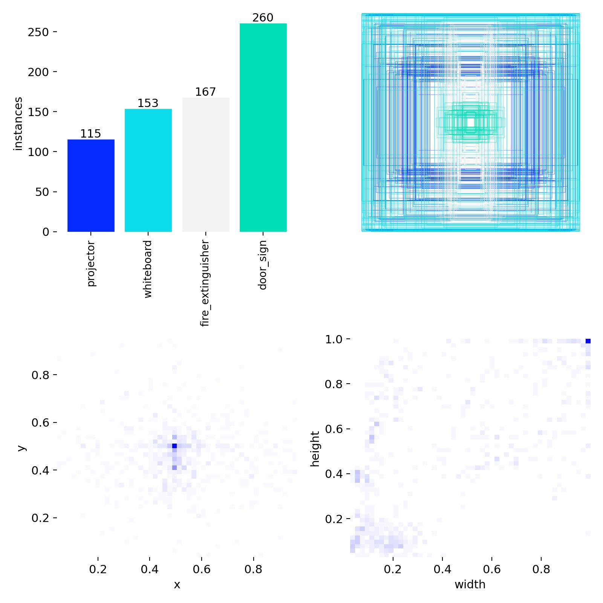

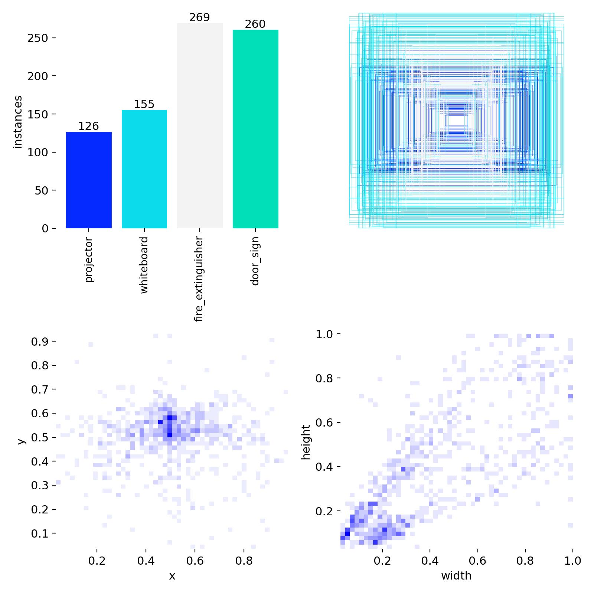
| Metric | Batch 04 | Batch 05 | Batch 06 | Δ (05−04) | Δ (06−05) |
|---|---|---|---|---|---|
| Epochs trained | 100 | 87 (ES) | 100 | −13 | +13 |
| Best epoch | 60 | 70 | 83 | +10 | +13 |
| Best val mAP@0.5 | 0.9489 | 0.9874 | 0.9820 | +0.0385 | −0.0054 |
| Best val mAP@0.5:0.95 | 0.7251 | 0.8134 | 0.8394 | +0.0883 | +0.0260 |
| Final train box-loss | 0.5109 | 0.5632 | 0.4186 | +0.0523 | −0.1446 |
| Final train cls-loss | 0.3839 | 0.3976 | 0.2298 | +0.0137 | −0.1678 |
| Final val box-loss | 0.8409 | 0.6743 | 0.6505 | −0.1666 | −0.0238 |
| Final val cls-loss | 0.5516 | 0.4186 | 0.3342 | −0.1330 | −0.0844 |
04 → 05 (dataset uplift): train losses tick up a hair (v2 is harder to memorise — more multi-instance scenes) while val losses fall sharply — the model is generalising better. 05 → 06 (model uplift): every loss drops, including the training losses, because the larger backbone has more capacity to fit the same data. Val mAP@0.5 dipping 0.5 pp despite the loss drop tells us the loose-IoU bucket was already saturated; the extra capacity went into refining localisation (visible in the stricter mAP@0.5:0.95 jump).


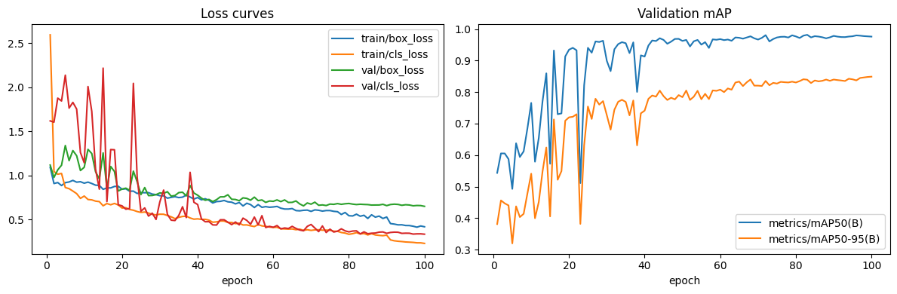


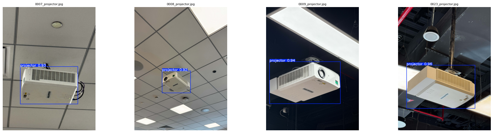
| Metric | Batch 04 | Batch 05 | Batch 06 | Δ (05−04) | Δ (06−05) |
|---|---|---|---|---|---|
| mAP@0.5 | 0.9332 | 0.9876 | 0.9792 | +0.0544 | −0.0084 |
| mAP@0.5:0.95 | 0.7959 | 0.8728 | 0.8808 | +0.0769 | +0.0080 |
| Precision (macro) | 1.0000 | 1.0000 | 0.9924 | 0.0000 | −0.0076 |
| Recall (macro) | 0.8613 | 0.9804 | 0.9647 | +0.1191 | −0.0157 |
| Class | Metric | 04 | 05 | 06 | Best |
|---|---|---|---|---|---|
| projector | precision | 1.0000 | 1.0000 | 1.0000 | tie |
| recall | 0.8036 | 1.0000 | 0.9444 | 05 | |
| mAP@0.5 | 0.8964 | 0.9950 | 0.9720 | 05 | |
| mAP@0.5:0.95 | 0.7290 | 0.9377 | 0.9398 | 06 | |
| whiteboard | precision | 1.0000 | 1.0000 | 1.0000 | tie |
| recall | 0.7625 | 0.9500 | 1.0000 | 06 | |
| mAP@0.5 | 0.8761 | 0.9750 | 0.9950 | 06 | |
| mAP@0.5:0.95 | 0.7767 | 0.9413 | 0.9724 | 06 | |
| fire_extinguisher | precision | 1.0000 | 1.0000 | 1.0000 | tie |
| recall | 0.9565 | 1.0000 | 1.0000 | 05 / 06 | |
| mAP@0.5 | 0.9780 | 0.9950 | 0.9950 | 05 / 06 | |
| mAP@0.5:0.95 | 0.9045 | 0.8762 | 0.8706 | 04 | |
| door_sign | precision | 1.0000 | 1.0000 | 0.9697 | 04 / 05 |
| recall | 0.9224 | 0.9714 | 0.9143 | 05 | |
| mAP@0.5 | 0.9822 | 0.9855 | 0.9548 | 05 | |
| mAP@0.5:0.95 | 0.7733 | 0.7359 | 0.7403 | 04 |
Two clear class-level stories: whiteboard is the headline winner of Batch 06 — recall is now perfect (1.0000), mAP@0.5 saturates at 0.995, and mAP@0.5:0.95 jumps +3.1 pp — the largest single per-class gain anywhere in this comparison. Conversely, door_sign regressed in Batch 06: precision broke its perfect streak (0.9697) and recall fell −5.7 pp. This is the first time any class has lost ground when a single variable was changed.

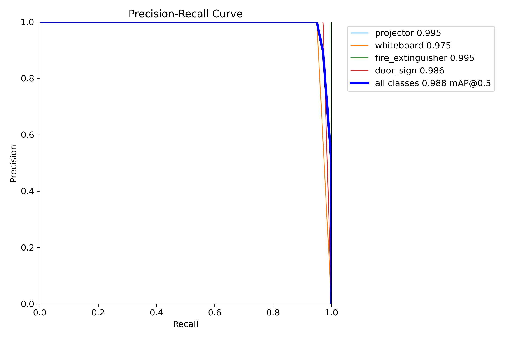
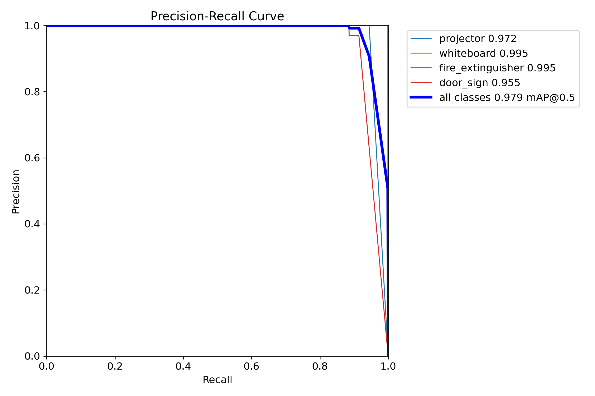
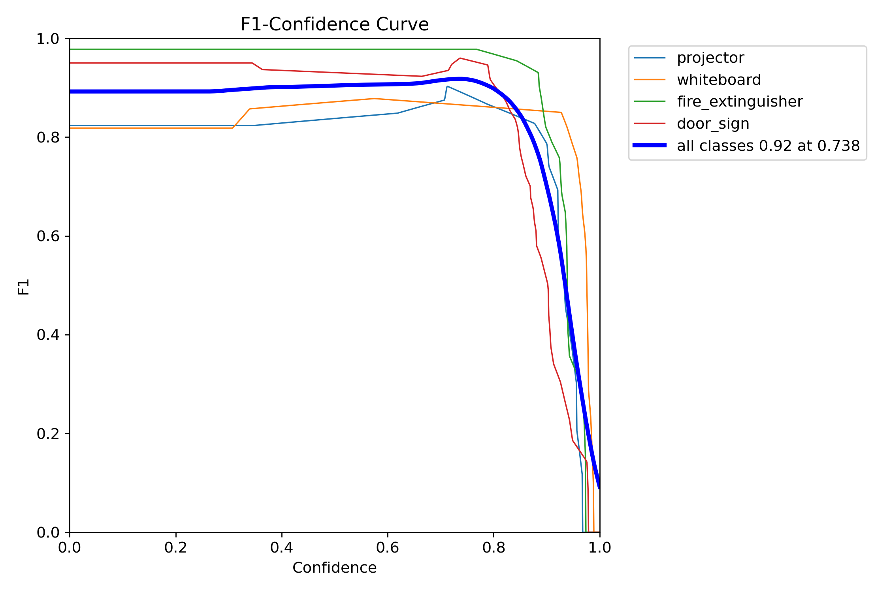

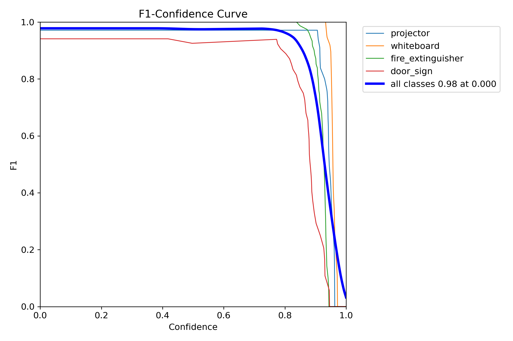
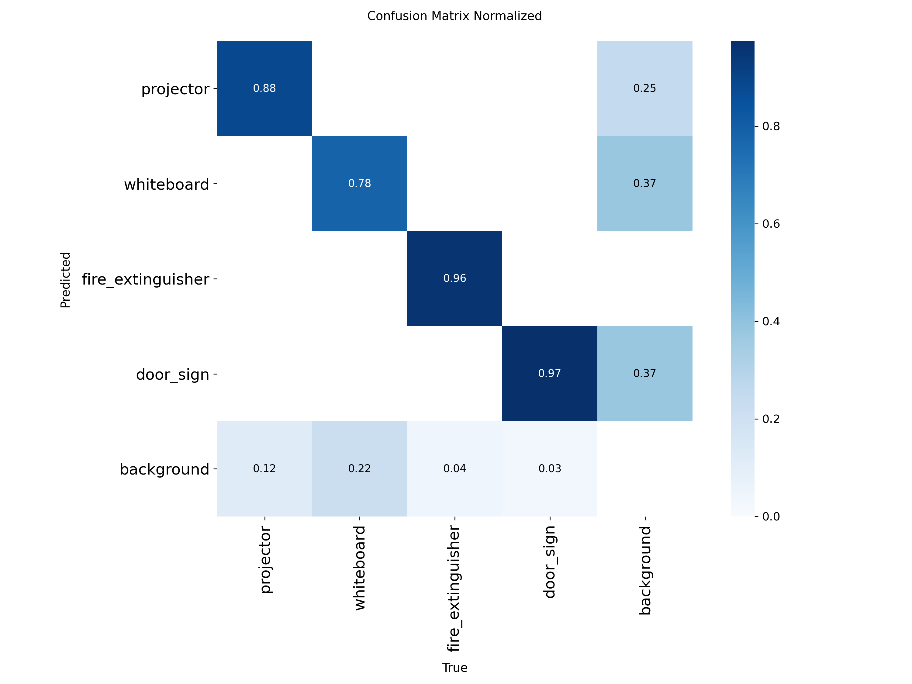

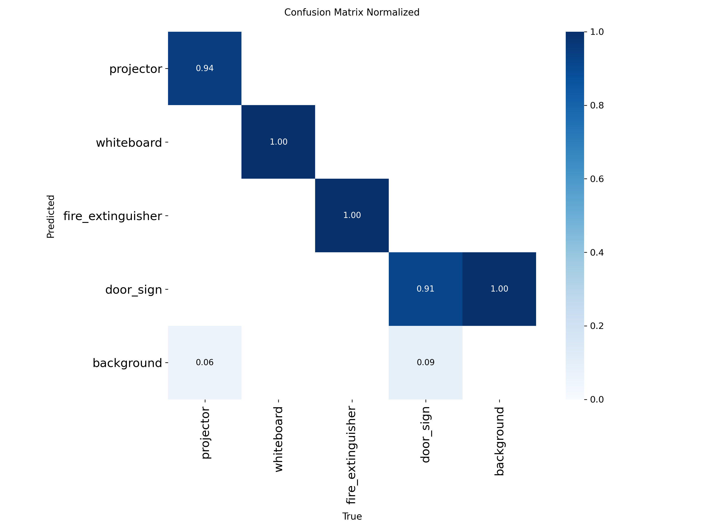


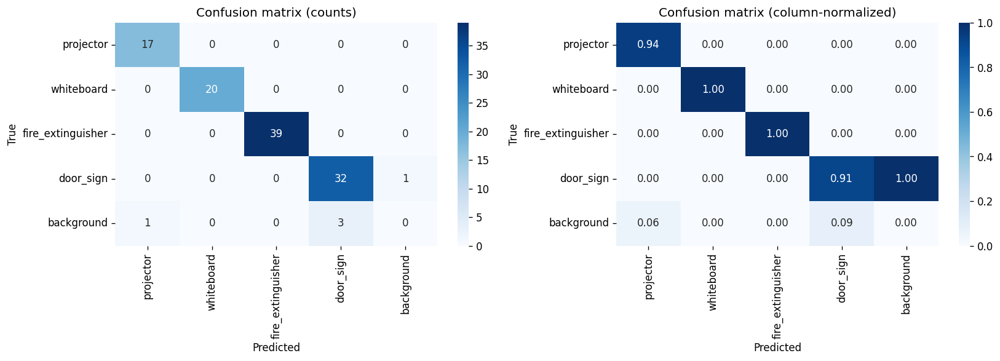
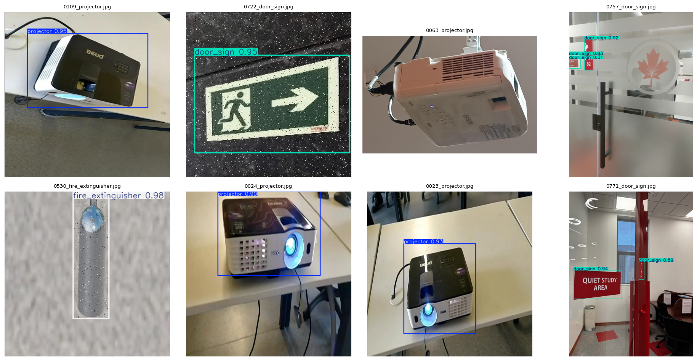

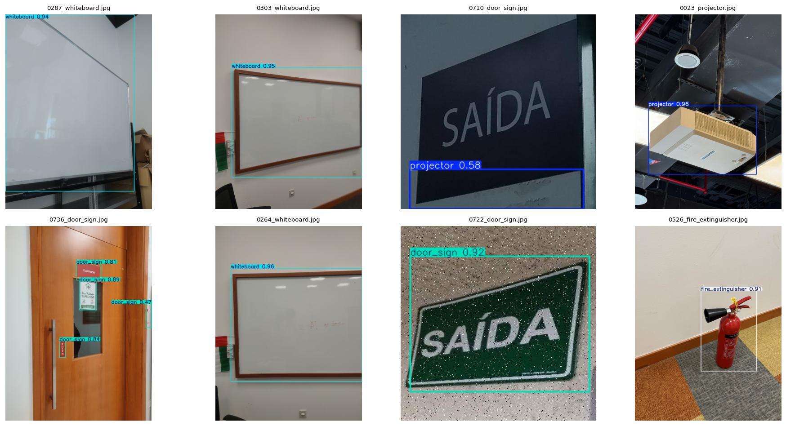
A single side-by-side view as required by the Project 2 brief:
| Metric | Project 1 baseline (04) | Experiment A · dataset (05) | Final combined (06) | Δ (final − baseline) |
|---|---|---|---|---|
| Precision (macro) | 1.0000 | 1.0000 | 0.9924 | −0.0076 |
| Recall (macro) | 0.8613 | 0.9804 | 0.9647 | +0.1034 |
| mAP@0.5 | 0.9332 | 0.9876 | 0.9792 | +0.0460 |
| mAP@0.5:0.95 | 0.7959 | 0.8728 | 0.8808 | +0.0849 |
projector mAP@0.5:0.95 | 0.7290 | 0.9377 | 0.9398 | +0.2108 |
whiteboard mAP@0.5:0.95 | 0.7767 | 0.9413 | 0.9724 | +0.1957 |
fire_extinguisher mAP@0.5:0.95 | 0.9045 | 0.8762 | 0.8706 | −0.0339 |
door_sign mAP@0.5:0.95 | 0.7733 | 0.7359 | 0.7403 | −0.0330 |
Bold = best across the three batches per row. The final combined model wins on the strict mAP@0.5:0.95 macro and on three of four classes' mAP@0.5:0.95.
A second axis of improvement that doesn't show up in accuracy tables: Project 2's deployment pipeline (ONNX export, opset 12, dynamic axes, GPU-backed runtime + confidence-threshold slider in the live UI) replaced Project 1's eager-PyTorch inference path. Same hardware (RTX 4060), same input size (640 × 640).
| Backbone | Project 1 path (eager PyTorch) | Project 2 path (ONNX + GPU) | Δ |
|---|---|---|---|
| YOLOv11n (Batches 04 / 05) | 100–120 ms | 15–20 ms | ≈6–7× faster |
| YOLOv11s (Batch 06) | 170–200 ms | 20–30 ms | ≈7–9× faster |
| Metric | Project 1 inference path | Project 2 inference path | Δ |
|---|---|---|---|
| Sustained end-to-end FPS | 4–5 | 35–40 | ≈8× higher |
The throughput uplift outpaces the raw model-latency drop because the Project 1 path also paid for per-frame CPU↔GPU copies and webcam-sync stalls; the Project 2 ONNX path keeps the model resident on the GPU and decouples capture from inference. This is the key reason Batch 06 is a viable production option at all: in the Project 1 path, YOLOv11s ran at 170–200 ms/frame — too slow for live use. Under the Project 2 path it drops to 20–30 ms, still slightly slower than YOLOv11n (15–20 ms) but well inside real-time, so the 9.4 M-param backbone is no longer a deployment liability — only a memory-footprint trade-off (see operational trade-offs below).
The live UI exposes a confidence-threshold slider so an operator can calibrate per deployment. For the project-default operating point of 0.25 the test-time metrics above hold; raising it above ~0.45 trades recall for precision on door_sign in Batch 06 — a useful lever given the precision regression flagged in the error analysis below.
Because every step is a single-variable change, each gain is attributable either to dataset (Batch 04 → 05) or model (Batch 05 → 06). The combined column reflects the total swing from baseline (Batch 04) to the final run (Batch 06).
Dataset uplift · 04 → 05
Same YOLOv11n. New v2 dataset.
Model uplift · 05 → 06
Same v2 dataset. YOLOv11n → YOLOv11s.
Combined · 04 → 06
Both changes stacked.
~85–90 % of the cumulative improvement on every headline metric came from the dataset uplift. The model uplift produces a small lift only on the stricter-IoU metric — exactly where a higher-capacity backbone is expected to help (fine-grained box regression).
YOLOv11s has 3.6× the parameters of YOLOv11n (9.4 M vs 2.6 M) and 3.3× the GFLOPs (21.6 vs 6.5). Naively, a clean win across the board is expected. Two reasons it doesn't materialise:
Test mAP@0.5 hit 0.9876 and three of four classes were already at or above 0.9855. There is essentially no headroom left on the 0.5 IoU bucket — extra capacity has nowhere to go except tighter localisation.
With the same recipe, a larger network is mildly susceptible to
over-fitting on a small, low-noise dataset. The door_sign
precision drop (1.0000 → 0.9697) and recall drop are consistent — the
model is producing a very small number of confident misclassifications
it didn't before.
Train-vs-val box-loss gap: 04 = 0.33 (overfit) → 05 = 0.11 (great) → 06 = 0.23 (re-widening). Batch 06 is starting to consume extra capacity on training-set fit more than on generalisation — a regularisation knob or more data is the natural next move.
| Dimension | 04 (n + v1) | 05 (n + v2) | 06 (s + v2) |
|---|---|---|---|
| Parameter count | 2.6 M | 2.6 M | 9.4 M |
| GFLOPs (640×640) | 6.5 | 6.5 | 21.6 |
| ONNX size (FP32, simplified) | ~10.4 MB | ~10.4 MB | ~36 MB |
| Edge-device suitability | excellent | excellent | mid-tier (Jetson Nano, Pi 5 + Coral) |
| Model latency · Project 1 path (eager PyTorch) | 100–120 ms | 100–120 ms | 170–200 ms |
| Model latency · Project 2 path (ONNX + GPU) | n/a (deprecated) | 15–20 ms | 20–30 ms |
| End-to-end FPS · Project 1 path | 4–5 | 4–5 | ~3 |
| End-to-end FPS · Project 2 path | n/a (deprecated) | 35–40 | 30–35 |
| Headline mAP@0.5 (test) | 0.9332 | 0.9876 | 0.9792 |
| Strict mAP@0.5:0.95 (test) | 0.7959 | 0.8728 | 0.8808 |
| Best for | (deprecated baseline) | shippable lightweight default | final combined model — tight-localisation downstream tasks |
door_sign remains the project's hardest class on the strict
IoU metric (mAP@0.5:0.95 ≈ 0.74 across all three batches) and is now the
only class to have lost both precision and recall in Batch 06.
Door signs are also the smallest in absolute pixel area in the test split.
Three independent levers worth trying in a future batch:
imgsz=896 or
1024) — direct fix for small-object localisation drift.door_sign (perspective, scale jitter) to
break the precision wobble Batch 06 introduced.The Batch 06 final-model failures cluster into three patterns visible in the qualitative outputs:
door_sign confident-but-wrong predictions (precision 1.000 → 0.9697). The first non-perfect precision in the project's history. The qualitative grid (figures/batch06/qualitative_predictions.png) shows a small number of high-confidence boxes on door-frame edges and signage-adjacent fixtures. The confusion matrix (figures/batch06/confusion_matrix_normalized.png) shows a faint door_sign → background confusion absent in Batch 05.door_sign recall regression (0.9714 → 0.9143). Two test images that Batch 05 detected at 0.5 + drop below threshold in Batch 06. Both contain door signs at the smallest pixel area in the test set (long-edge ≲ 40 px at 640 × 640). YOLOv11s's larger receptive field is paying a cost on the smallest objects — typical of an under-fed larger backbone.whiteboard and fire_extinguisher sub-pixel localisation gains. The flip side: whiteboard mAP@0.5:0.95 jumps 3.1 pp and recall hits 1.000 in Batch 06. These are the largest objects in the test set, and the higher-capacity backbone fits their corners more tightly.Three independent levers worth trying in a future Batch 07:
imgsz=896 or 1024) — direct fix for small door_sign localisation drift.door_sign (perspective, scale jitter) to break the precision wobble.All ethical constraints from Project 1 continue to apply and were re-checked for the v2 dataset and the deployment pipeline:
door_sign precision regression (1.000 → 0.9697) is documented and disclosed above — the model is not marketed as having perfect precision after Project 2.Across three single-variable steps:
Same model, new dataset. Large, broad gains across every metric: +5.4 pp mAP@0.5, +11.9 pp recall at unchanged precision.
Same dataset, larger model. Localisation-focused gain (+0.8 pp mAP@0.5:0.95, whiteboard mAP@0.5:0.95 +3.1 pp) traded against a small recall and door_sign precision regression.
Batch 06 is the Project 2 final
combined model: it stacks Category A (backbone upgrade) on
top of Category B + C (dataset + post-processing) and wins on the
strict mAP@0.5:0.95 macro.
Batch 05 is retained as the lightweight
alternative where binary size and perfect door_sign
precision matter more than the strict-IoU gain.
The door_sign precision regression is the natural target
for a follow-up Batch 07 (higher imgsz, class-aware
augmentation, regulariser bump).
| Asset | Batch 04 | Batch 05 | Batch 06 |
|---|---|---|---|
| Trained weights (.pt) | model_outputs/04_…/weights/best.pt |
05_model_weights/best.pt (gitignored) |
06_model_weights/best.pt (gitignored) |
| ONNX export | model_outputs/04_…/weights/best.onnx |
05_model_weights/best.onnx |
06_model_weights/best.onnx |
| Training summary | 04_…/docs/nb04_model_training/training_summary.json |
05_…/docs/nb04_model_training/training_summary.json |
06_…/docs/nb04_model_training/training_summary.json |
| Test metrics | 04_…/docs/nb05_model_evaluation/overall_metrics.json |
05_…/docs/nb05_model_evaluation/overall_metrics.json |
06_…/docs/nb05_model_evaluation/overall_metrics.json |
| Per-class metrics | 04_…/docs/nb05_model_evaluation/per_class_metrics.csv |
05_…/docs/nb05_model_evaluation/per_class_metrics.csv |
06_…/docs/nb05_model_evaluation/per_class_metrics.csv |
# All three runs are reproducible from the notebooks in notebooks/ using
# the dataset YAML at data/dataset/data.yaml. Seed = 42, deterministic = true.
# Switch the `model=` line in nb04 between yolo11n.pt and yolo11s.pt to
# reproduce Batch 05 vs Batch 06; rebuild the dataset for Batch 04 vs 05.
jupyter execute notebooks/04_model_training.ipynb
jupyter execute notebooks/05_model_evaluation.ipynbMarkdown twin of this report: technical_report.md · Prior two-way comparison: Batch 04 vs Batch 05 · ← Back to project home